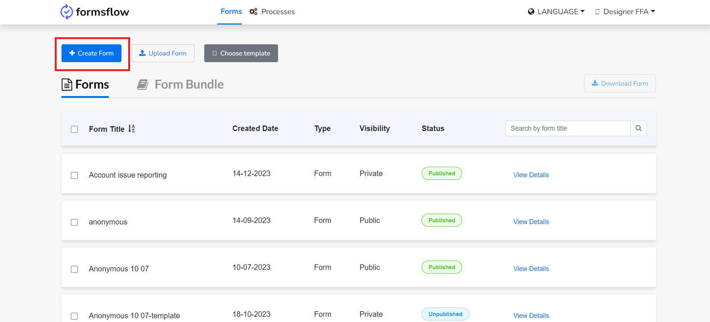
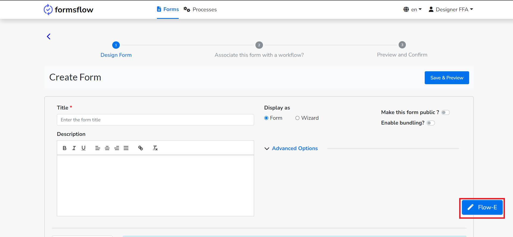
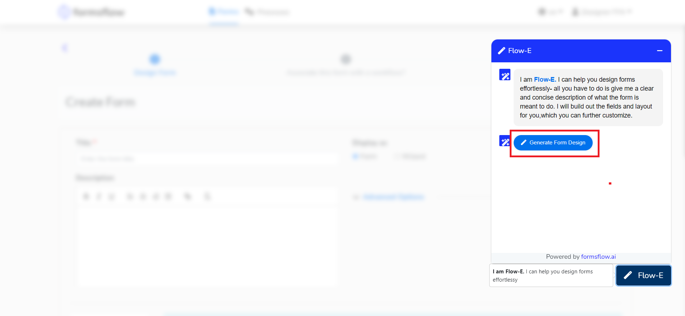
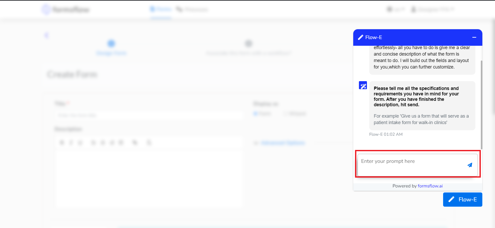
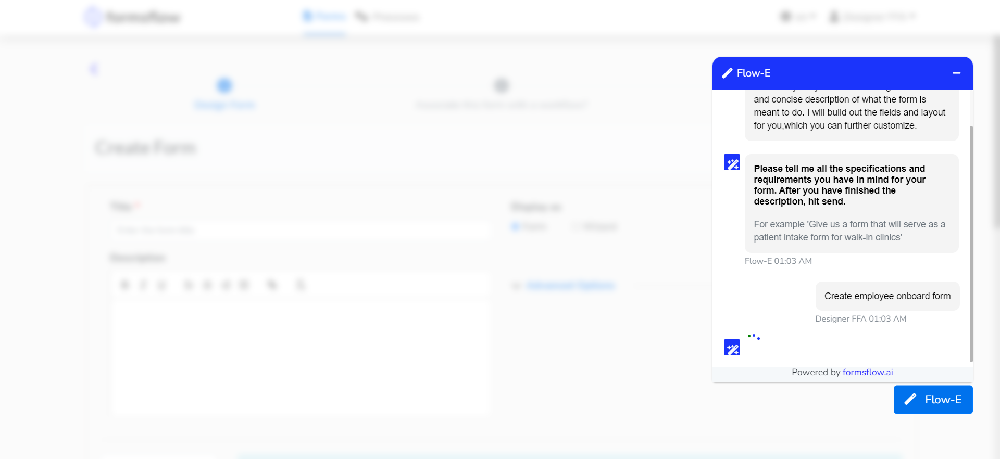
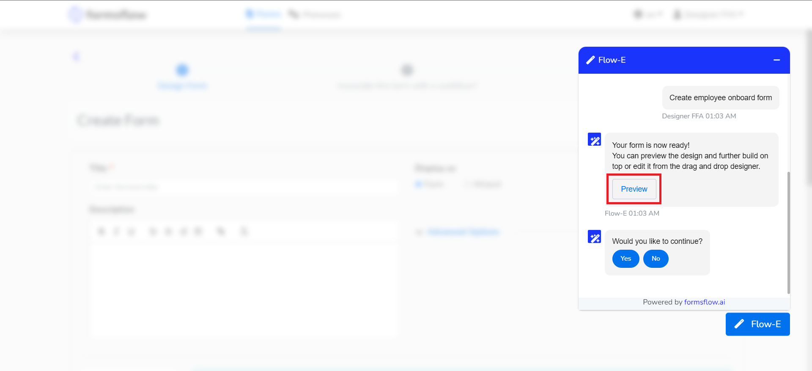
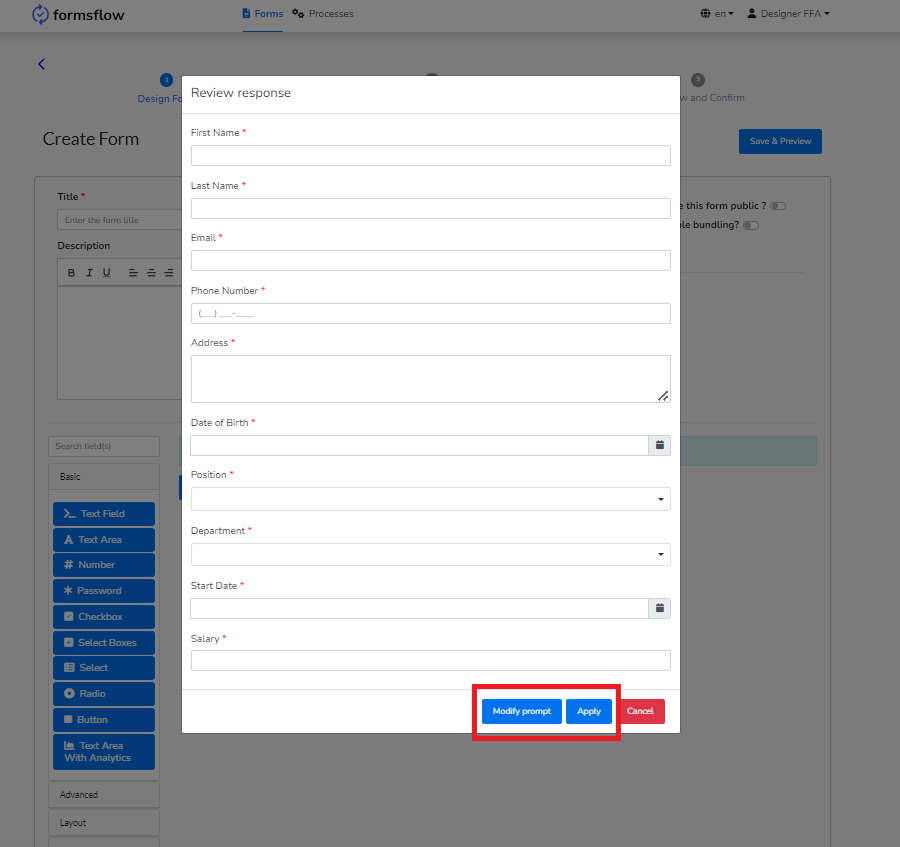

<article class="docs-article" >
    <section class="docs-section" id="chatbot">
        <div>
            <h1>Flow-E : The AI assisted form creation</h1>
            <hr>
            <p>
                formsflow.ai incorporates AI chat assist support for form creation, where users engage with a GPT-powered AI chatbot. This chatbot is engineered to comprehend user queries, prompts, and instructions pertaining to form design, subsequently generating the form based on the user's input.            
            </p>

            <h4>Steps</h4>
            <ol>
                <li>Log in as a designer and click on Create form.
                <br><br>
            </li>
            <li>
                Click on the Flow-E button located at the bottom right.
                <br><br>
            </li>
            <li>
                Click on the Generate Form Design button which will take you to the form design prompt.
                <br><br>
            </li>
	    <li>
            Give the specific requirement to create a form.
            <br><br>
            <br><br>


	    </li>
            <li>
                The preview of the generated form will be displayed. 
                <br><br>
                <br><br>

            </li>
            <li>
                Either you can apply the changes or modify the prompt by selecting the option.                
            </li>
            </ol>


            

    </section>
    